pt cm
Soit  un ensemble et
un ensemble et
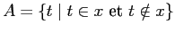
un ensemble vide. Supposons au contraire qu'il existe un élément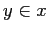
et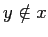
. Ainsi, et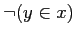
, ce qui est logiquement impossible.
Soient  et
et
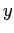
deux ensembles vides. Alors, pour tout ensemble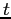
,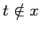
et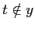
. Ainsi,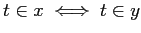
, ce qui entraîne en vertu de l'axiome d'extension que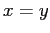
.Notons dorénavant l'ensemble vide par .
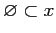
pour tout ensemble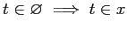
. Or, on sait que cela est vrai si et seulement si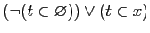
est vrai. Comme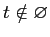
pour tout ensemble , le dernier énoncé est vrai et ainsi l'implication l'est aussi. Donc, pour tout ensemble
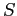
un ensemble non vide ne satisfaisant pas à l'axiome de régularité.Alors, pour tout élément non vide
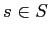
, on a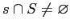
.
En vertu de l'axiome du choix, il existe une application de
choix  telle que
telle que
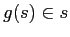
pour tout élément non videPosons
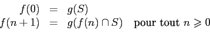
Pour chaque
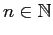
,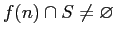
. Donc,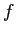
est une application.
De plus, comme  est une fonction de choix, on a que
est une fonction de choix, on a que
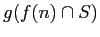
est un élément de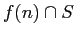
. Ainsi,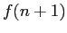
est un élément deOn a donc une suite infinie d'ensembles
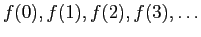
telle que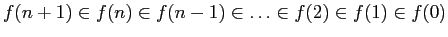
, ce qui contredit l'axiome de fondation.Donc, l'axiome de fondation implique l'axiome de régularité.
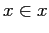
. Posons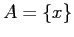
. En vertu de l'axiome des paires,
En vertu de l'axiome de régularité,  contient un élément
qui est disjoint de
contient un élément
qui est disjoint de  . On sait que le seul élément de
. On sait que le seul élément de  est
est  . Donc,
. Donc,
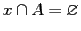
. Or, et entraînent que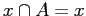
, ce qui est une contradiction.Donc,
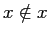
pour tout ensemble
Donc, il n'existe pas d'ensemble de tous les ensembles.
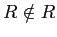
. Par définition de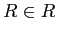
. On a donc simultanément et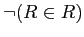
, ce qui est logiquement impossible. Donc,
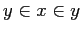
. Alors,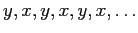
est une suite infinie d'ensembles telle que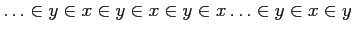
, ce qui contredit l'axiome de fondation.
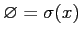
. On a alors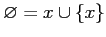
. Comme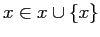
, on en déduit que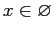
, ce qui est une absurdité en vertu du numéro 1.Donc, l'ensemble vide n'est le successeur d'aucun ensemble.
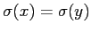
. Alors,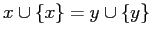
. Comme , on a que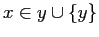
. Ainsi,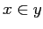
ou . Si , c'est fini. Supposons donc que .De même,
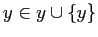
, entraîne que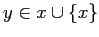
. Ainsi, ouOn a donc à la fois et , ce qui contredit l'axiome de fondation (voir numéro3).
Donc, des ensembles différents ont des successeurs différents.
Définissons
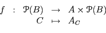
où
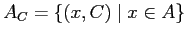
.
Premièrement, remarquons que pour tout
, on
a que
. Ainsi,
est un ensemble formé
d'ensembles équipotents à  . Comme
. Comme  est l'ensemble de tous
les ensembles équipotents à
est l'ensemble de tous
les ensembles équipotents à  , on en déduit que
est un sous-ensemble de
, on en déduit que
est un sous-ensemble de  et que
.
et que
.
Deuxièmement, remarquons que si  et
sont deux éléments de
, alors
. Ainsi,
est
injective et il existe une bijection entre
et
. Donc,
.
et
sont deux éléments de
, alors
. Ainsi,
est
injective et il existe une bijection entre
et
. Donc,
.
En combinant les deux inéquations, on a d'où , ce qui est une contradiction au théorème de Cantor.